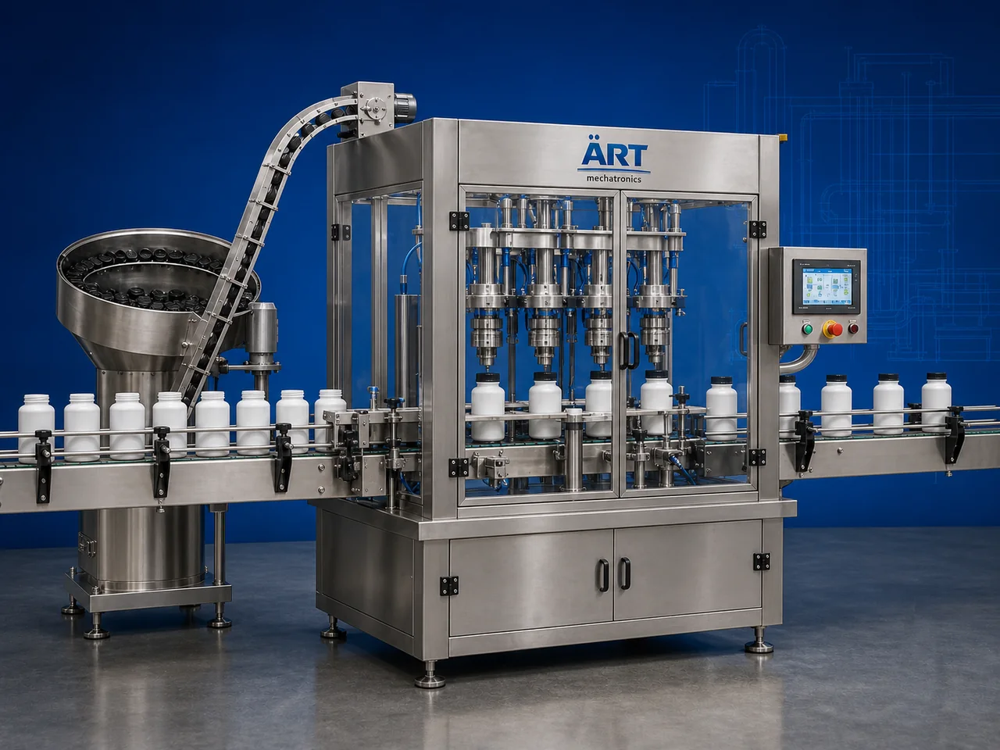

Container Capping Machine (Automatic Bottle, Jar & Drum Capping System)
A Container Capping Machine, also known as a Bottle Capping Machine, Cap Tightening Machine, Jar Capping Machine, or Automatic Container Closing System, is an advanced industrial packaging solution designed for automatic container feeding, cap placement, screw capping, spray pump fitting, cap…

About the Container Capping Machine
Container capping systems are widely used for: ✔ Bottle screw capping ✔ Spray pump fitting ✔ Jar and jug capping ✔ Jerry can cap tightening ✔ Drum bung closing ✔ Gallon cap sealing ✔ Cosmetic bottle capping ✔ Industrial liquid packaging operations
The machine improves: ✔ Cap tightening accuracy ✔ Product hygiene ✔ Leak-proof sealing quality ✔ Packaging consistency ✔ Production efficiency ✔ Transportation safety ✔ Retail packaging appearance
Industrial container capping machines use: ✔ Automatic cap feeding systems ✔ Servo synchronized capping heads ✔ PLC and HMI automation controls ✔ Torque controlled tightening systems ✔ Conveyor synchronized handling systems
to automatically close and seal containers with superior cap alignment accuracy and high production efficiency.
Container capping machines are widely used in industries such as:
Beverage industries Food processing industries Chemical industries Cosmetic industries Pharmaceutical industries Lubricant industries Agrochemical industries FMCG industries
where leak-proof packaging, hygienic sealing, and high-speed production are essential.
The machine is highly suitable for: ✔ Water and beverage bottle capping ✔ Spray bottle cap fitting ✔ Chemical container sealing ✔ Drum and gallon cap tightening ✔ Cosmetic bottle packaging ✔ Industrial liquid packaging operations
ART Mechatronics offers high-performance container capping machines, engineered for continuous industrial operation, precision capping performance, hygienic packaging quality, and reliable long-term packaging automation.
Working Principle of Container Capping Machine
- 1. Filled Container Feeding Filled containers are automatically fed into capping section through synchronized conveyor systems.
- 2. Cap Feeding Process Machine automatically feeds caps or spray pumps through cap elevators or bowl feeding systems.
Servo synchronization ensures accurate cap positioning and smooth container handling.
- 3. Capping Operation Machine handles: ✔ Screw caps ✔ Spray pumps ✔ Flip top caps ✔ Drum bungs ✔ Gallon caps ✔ Jerry can closures ✔ Canister lids
accurately and continuously.
- 4. Cap Tightening & Sealing Process Machine performs: Torque controlled tightening Leak-proof sealing Cap pressing Thread alignment Tamper-proof capping
for hygienic and transportation-safe packaging quality.
- 5. Coding & Inspection Integration Optional systems include: Batch coding Date printing QR code printing Vision inspection systems Cap presence detection systems
- 6. Finished Container Discharge Capped containers discharged automatically for: Labeling Cartoning Case packing Warehouse storage Export shipment handling
Types of Container Capping Machines
- 1. Bottle Screw Capping Machine Designed for: ✔ Beverage and liquid bottle packaging applications
- 2. Spray Pump Capping Machine Suitable for: ✔ Cosmetic and spray bottle packaging systems
- 3. Jerry Can & Drum Capping Machine Uses: ✔ Industrial liquid container sealing systems
- 4. Gallon & Jug Capping Machine Designed for: ✔ Large volume liquid packaging systems
- 5. Servo Driven Capping Machine Suitable for: ✔ Precision high-speed capping operations
- 6. Fully Automatic Container Capping System Designed for: ✔ Complete industrial packaging automation lines
Industries Using Container Capping Machines
🥤 Beverage Industry Water bottles, juices, soft drinks, and beverage packaging systems. 🍅 Food Processing Industry Sauces, syrups, edible oils, and food liquid packaging systems. ⚗️ Chemical Industry Industrial liquids, solvents, and chemical container sealing systems. 🧴 Cosmetic & Personal Care Industry Perfumes, lotions, shampoos, and spray bottle packaging systems. 🛢️ Lubricant Industry Industrial oils, lubricants, and heavy-duty liquid packaging systems. 🛒 FMCG Industry Consumer liquid products and retail packaging systems.
Features & Advantages
✔ High-speed automatic container capping operation ✔ Accurate torque controlled cap tightening systems ✔ Hygienic and leak-proof sealing quality ✔ PLC and servo automation control systems ✔ Improves packaging safety and transportation reliability ✔ Reduces manual capping dependency ✔ Supports multiple cap types and container sizes ✔ Reliable long-term industrial performance ✔ Smooth and continuous packaging line integration
Technical Highlights
Machine Type: Automatic container capping machine Industrial cap tightening system Packaging closure machine Container Type: PET bottles Glass jars Jerry cans Canisters Drums Gallons Buckets Cap Type Compatibility: Screw caps Spray pumps Flip top caps ROPP caps Drum bungs Canister lids Features: PLC control system Servo synchronization Touchscreen HMI Automatic cap feeding systems Torque control systems Applications: Beverages Oils Chemicals Cosmetic liquids Detergents Industrial liquids Automation: Semi-automatic Fully automatic industrial systems
Turnkey Container Capping Solutions
ART Mechatronics offers: Complete capping systems Automatic cap tightening solutions Packaging automation integration systems Conveyor synchronization systems Installation & commissioning After-sales service & AMC
Why Choose Art Mechatronics
Expertise in industrial packaging and automation systems Customized capping solutions for multiple industries High-performance and precision capping technology Advanced PLC and servo automation systems Proven industrial packaging performance across sectors
Applications
Beverage Manufacturing Plants Food Processing Industries Chemical Packaging Facilities Cosmetic Manufacturing Units Industrial Liquid Packaging Plants FMCG Packaging Industries
Industries that use the Container Capping Machine
Get pricing & specs for the Container Capping Machine
Share the product, target capacity, current process and plant location. These details help our engineers discuss the right machine or line configuration.
One partner, from design to start-up
ART Mechatronics designs, manufactures, installs and commissions your Container Capping Machine solution with regional presence in India, UAE and Thailand.